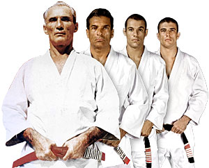

O Jiu Jitsu é uma arte marcial de combate eficiente, ela tambem é muito conhecida por ser a arte suave.
Esta arte marcial é muito ampla, existem muitos estilos, posturas, e vairias outras variações.Serve tanto para defesa pessoal quanto para combate como esporte.
Esta arte surgiu no continente Asiático, há cerca de 3.600 anos. No Brasil, surgiu em 1914, trazido pelo japonês Mitsuyo Maeda.
Os irmãos Gracie introduziram adaptações, resultando no Brazilian jiu jitsu.
A família Gracie é uma família de lutadores brasileiros originários de Belém e radicados atualmente nas cidades de Rio de Janeiro e São Paulo.
Carlos Gracie e Hélio Gracie, os patriarcas da família, são considerados os pais do jiu-jitsu no Brasil.

Como funciona a arte jiu jitsu:
Baseia-se no equilíbrio, nas articulações corporais e das alavancas.
Como modalidade esportiva, o objetivo principal de cada um dos lutadores consiste na derrubada de seu oponente, bem como na imobilização.
Dessa forma, pode-se dizer que não são usados objetos para a prática desse esporte, e sim apenas o próprio corpo.
""
Gradução no jiu-jitsu
A graduação se baseia em conhecimento e tempo (experiência). Vai de mestre a mestre aviliar o conhcimento do seu aluno para o gradua-lo.
Normalmente as graduações ocorrem de 6 em 6 meses. A idade mínima para avançar para a faixa azul é de 16 anos de idade.
São 7 faixas para conquistar, sem contar as faixas extensoras para quando o aluno não tem idade para a faixa.
As faixas são a branca com 4 gaus, azul com 4 graus, roxa com 4 graus, marrom com 4 graus até a faixa preta ponta branca com 7 graus,
Depois vem com mais de 20 anos a faixa preta com pontaa vermelha também com 7 graus.
A faixa preta propriamente dita ela é dividida em 7 níveis, a faixa preta lisa e mais 6 graus.
A faixa vermelha e preta representa por si só o sétimo grau.
Na faixa preta de Jiu Jitsu a faixa vermelha e branca representa por si só o oitavo grau, e a faixa vermelha representa o nono e o decimo grau.
Os graus nas faixas são marcados e representados por esparadrapos na faixa em si.